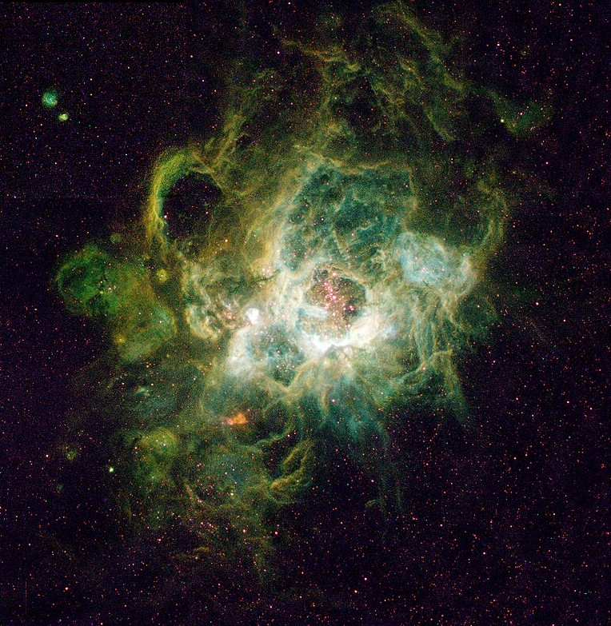

Una estrella es un objeto astronómico que irradia luz y calor, esto debido a la fusión termonuclear de varios gases, como el helio y el hidrógeno.
En la antigüedad, se creía que las estrellas eran esferas gigantescas de fuego perpetuo, pero no fue hasta inicios del siglo XIX que se teorizó que puedan tener un ciclo de vida completo.
Actualmente, se sabe que su gravedad, masa y color, cambian con base en el estado de su ciclo de vida, además de la existencia de distintos tipos de estrella que cubren el vacío del universo observable.
Aprovechemos para hablar un poco de los tipos de estrellas más comunes y la manera en que se desenvuelven a lo largo de su vida.

Nacimiento de las estrellas
Las estrellas se forman a partir del colapso gravitatorio y condensación de inmensas nubes moleculares de gran densidad. Una misma nube puede generar múltiples estrellas.
La masa de la nube determina también la masa de la estrella, pero no toda la masa de la nube permanece en ella, pues una gran parte de este es expulsado cuando esta comienza a tomar forma.
La continua lucha entre la gravedad y la presión producida por el calor que las reacciones termonucleares generan, es el determinante de la manera en que esta evolucionará.
Esta evolución tiene distintas características, masas y colores, pero principalmente se dividen en 3 tipos de estrellas:

Enanas rojas
Es uno de los tipos de estrella más pequeños, y relativamente, más fríos del universo, con una masa promedio de menos de la mitad de la masa del sol, pero conforman la mayoría de las estrellas visibles en el universo observable, incluída la Vía Láctea.
La mayoría, no son visibles desde la Tierra a simple vista, a pesar de que la estrella más cercana al Sol, Proxima Centauri, sea una enana roja.

Su secuencia principal es similar al resto de tipos de estrellas, pues consiste en quemar lentamente su combustible de hidrógeno. Pero en serio lenta, pues esta etapa puede durar billones de años.
A pesar de su pequeño tamaño, masa y poco calor, es el tipo de estrella más longevo en el universo, pues gracias a su pequeño tamaño, no necesita quemar combustible en grandes cantidades, pudiendo prevalecer por mucho tiempo.

Eventualmente, su ciclo de vida llega a su fin, la estrella comienza a enfriarse gradualmente en lugar de expandirse, como el resto de tipos de las estrellas.
A diferencia de sus hermanas mayores, las enanas rojas no tienen la masa suficiente para iniciar la fusión del helio, por lo que solo se contraen y continúan enfriándose.
Con el paso del tiempo, se convierten en enanas blancas, un tipo de estrella que se apaga lentamente hasta desaparecer.